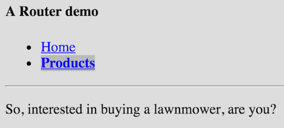

React Router
completing the trinitySo we introduced Redux to deal with the data in our React app. But, what about navigation?
The need for navigation
Where are we going?
SPA stands for Single Page Application. This describes the fact that the page never reloads in the traditional sense.
We're dealing with one single front-end webapp throughout the session lifetime.
But unless we're building something very simple, we still need to provide navigation.
In a SPA we have two options for doing so.
Option 1 is to handle our own navigation. Whenever the user clicks something to go to a different view, we catch that event and repopulate the screen with whatever the user asked for.
The advantage of this approach is that it is easy. We're in total control, and navigation added no external dependencies.
There's a huge downside, however: browser navigation won't work in our app, meaning:
- The user cannot bookmark a position in the app
- Hitting the back button means leaving the app alltogether
For a serious webapp, these are dealbreakers.
Which is why all frameworks go with option 2, namely to hook into the browser navigation. Angular, Ember, Meteor, Aurora - they all have their own built-in routing solution.
But React is not a full framework. It deals mostly with the view, and doesn't care how you solve the navigation problem.
If you want to hook into the browser navigation, you have to do it yourself.
...or, you can include a companion library where someone else has already solved the problem! Which is exactly what React Router is.
Note that we'll be talking about version 2 of React Router, which is still the most common in the wild. However, there is a version 4 released which is very different!
Version 3? Never really happened. :)
Exploring an example
Routing in the real world
Before we peek under the hood, we'll explore a simple example app that uses React Router.
Here's what the home screen looks like:

Note how the home link in the navbar is active.
Clicking on products takes us to this list:

Now the Products link in the nav menu is active.
Finally here's the screen for a specific product:

Note how the Products link is still active, since we're still considered to be in the same section.
As stated a very simple app, yet still enough to catch the most common routing needs.
We'll be walking through it together, but you can try the demo here: Router
The route map
Where to go
At the heart of an app using React Router is the routes definition. Inspired by Ember, it is a nested declaration of all routes in your app.
Here's a conceptual sitemap of our example:
routes
home
products
list
productitem
Home is just a single page. Products is a section with two pages; a list and a product item.
Thinking about it, this is a nested structure much like the DOM. We've already seen how convenient it is to describe the DOM with the JSX syntax, so why not use that for the routes too?
That's exactly the approach React Router takes.
Here's the routes definition for our example app:
const routes = (
<Route path="/" component={Wrapper}>
<IndexRoute component={Home} />
<Route path="/products">
<IndexRoute component={ProductList} />
<Route path="/products/:productid" component={Product} />
</Route>
</Route>
);
Even without fully understanding every detail, we can see that the routes definition serves three powerful purposes at the same time:
- Connecting paths to components
- Providing a templating solution
- Showing an overview of your entire app
The rest of the details will hopefully clear when we take a closer look at the Wrapper, index routes, links and parameters respectively.
The Wrapper component
Router templating
Now we'll take a closer look at the Wrapper component, which functions as a master template in our app:
const routes = (
<Route path="/" component={Wrapper}>
// ...lots of sub routes...
</Route>
);
This definition means that Wrapper will be rendered for the path / and all child paths too. If a child path is matched, then the component tied to that route will be passed as a child to Wrapper.
Here's the code for Wrapper:
// Abbreviations: ILink is IndexLink and acn is activeClassName
let Wrapper = props => (
<div>
<h4>A Router demo</h4>
<ul class="nav">
<li><ILink to="/" acn="now">Home</ILink></li>
<li><Link to="/products" acn="now">Products</Link></li>
</ul>
<hr/>
<div class="content">{props.children}</div>
</div>;
);
Note how we render matched child routes into content.
In the example app we only have one wrapper, but if we wanted to we could nest wrappers.
Let's for example say that we want all pages in the products section to have a distinct look.
That's as easy as adding a component, let's call it ProductSection, to the /products route:
const routes = (
<Route path="/" component={Wrapper}>
<IndexRoute component={Home} />
<Route path="/products" component={ProductSection}>
<IndexRoute component={ProductList} />
<Route path="/products/:productid" component={Product} />
</Route>
</Route>
);
And ProductSection wouldn't need to be more complicated than this:
let ProductSection = props => (
<div className="productsection">
{props.children}
</div>
);
In other words, wrapping routes and wrapping components are just two sides of the same coin!
Index routes
You say potato
Let's wrap our brains around the difference between a Route and an IndexRoute.
Take a look at our routes again:
<Route path="/" component={Wrapper}>
<IndexRoute component={Home} />
<Route path="/products" component={ProductSection}>
<IndexRoute component={ProductList} />
<Route path="/products/:productid" component={Product} />
</Route>
</Route>
Can you guess what the functions of IndexRoutes are?
An IndexRoute is like a default route - it is rendered if no sibling route is matched. This means that an IndexRoute...
- must be the child of a
Routewith apath - cannot have a
pathof its own - can never have another
IndexRouteas a sibling
Links
Getting a highway pass
We'll now take a look at how to implement links in an app using React Router.
As you perhaps noticed in the Wrapper source, we can use the Link component from React Router:
let Link = ReactRouter.Link;
let l = <Link to="/about">About</Link>;
When clicked, the link l will navigate to the route /about.
Remember how the navbar links in our example app were highlighted if the route they linked to was currently active?
We accomplish that through the activeClassName property:
<Link to="/about" activeClassName="active">About</Link>
This link will be rendered with the CSS class active if our current route matches /about.
However, this clashes when we link to an IndexRoute since that route will always match.
That's why we use an IndexLink when linking to such a route, to only have it active if we are literally at that route and no other.
Here are the navbar links from the example app demonstrating this:
<IndexLink to="/" activeClassName="active">Home</IndexLink>
<Link to="/products" activeClassName="active">Products</Link>
Parameters
There's no party without them!
You saw them flash by in our example app for the product item page. Here's that route definition again:
<Route path="/products/:productid" component={Product} />
The colon makes the last part of the path into a parameter.
Which means that if we...
- navigate to
/products/dishwasher - then the route
/products/:productidwill match - and the parameter
productidwill equaldishwasher.
Observe that the colon is only used in the routes definition.
We do not use it in our URL:s when we navigate or link.
We can see this in action in the source code for the Product component:
let Product = props => (
<div>
<p>Interested in buying a {props.params.productid}?</p>
</div>
);
Note how the parameters are available on props.params. This is React Router's doing.
Route configuration
Drawing the map
Now the time has come to zoom out and see how to configure and initialize all this!
Here's the relevant code from the example app:
let Router = ReactRouter.Router,
hashHistory = ReactRouter.hashHistory;
ReactDOM.render(
<Router routes={routes} history={hashHistory} />,
document.getElementById("container")
);
As you can see we use a Router component as a root component, feeding it our routes and a history engine.
Note the difference between Router and Route!
- A
Routerepresents a single route, so we have many of those. Routeris the root component, which receives allRoutes as children.
Finally, what about the history parameter? That dictates how React Router should hook up paths to the browser.
There are 3 different implementations built in;
- hashHistory
- browserHistory
- createMemoryHistory
We'll now take a quick look at each of them.
In the example app we used hashHistory. This means that the app path lives in the hash of the URL:
The meaningless stuff at the end, ?_k=hl9mxa, is an unfortunate artifact necessary to reliably track unique state.
If we instead used browserHistory then we'd get a clean, "regular" URL with no hashes or artifacts.
But this requires server-side configuration to handle the case when the user starts somewhere else other than the root, which is why the example app doesn't use it.
Finally createMemoryHistory doesn't connect to the browser at all, but instead handles the navigation state in memory. Much like Option 1 for SPA:s that we mentioned initially as an example of what not to do.
So why would we want to use memoryHistory? Three main reasons:
- For small apps that are living inside a larger app, for example a JSBin demo
- For rendering our apps server side where there is no browser
- For testing
You can read more about the histories, and especially how to configure your server for browser histories, here: Histories
Acting on route change
Employing a bouncer
As a final piece to the puzzle, React Router exposes hooks to act on transitions. There are three different events:
- onEnter: Hmm, you're not on the guest list!
- onLeave: Are you SURE you want to leave?
- onChange: fired also for query or child route changes
The events are placed as event listeners on the Route elements in the config, making us feel right at home!
<Route path="/dashboard" onEnter={checkAuth}/>
In the function supplied to the hook you can
- do async stuff
- inspect current / upcoming route data
- redirect
As an example, check out the RouterHook demo where we've added a VIP gatekeeper to our product section!